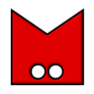

Localizada em Rio Grande/RS, é considerada a maior praia em extensão do mundo, com mais de 220 km de faixa contínua de areia, indo até o Chuí.
Fonte: Informações turísticas de Rio Grande/RS.
Imagens fornecidas por surfkssino.com